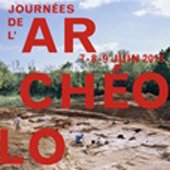
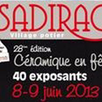
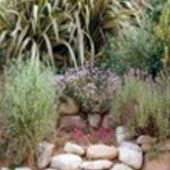

Événements à venir
-
 Du 01/05/2013 au 10/11/2013
Professionnel
Du 01/05/2013 au 10/11/2013
Professionnel
Les petits labos de l'archéo
Par : Musée archéologique ... -
 Du 08/06/2013 au 09/06/2013 Grand public
Les journées nationales de l’archéologie 2013
Par : Centre de Conservation et d’Etude sur le centre ... -
 Du 08/06/2013 au 09/06/2013 Grand public
28ème édition « Céramique en Fête »
Par : Ville de Sadirac -
Du 01/06/2013 au 27/10/2013 Professionnel
Des espèces venues d'ailleurs
Par : Musée d'Histoire Naturelle Victor Brun -
 Du 02/05/2013 au 31/10/2013 Grand public
Jardins secs : à fleur de nez !
Par : Jardins du Muséum -
Du 01/06/2013 au 27/10/2013 Professionnel
Des espèces venues d'ailleurs
Par : Musée d'Histoire Naturelle Victor Brun -
Du 01/06/2013 au 27/10/2013 Professionnel
Des espèces venues d'ailleurs
Par : Musée d'Histoire Naturelle Victor Brun